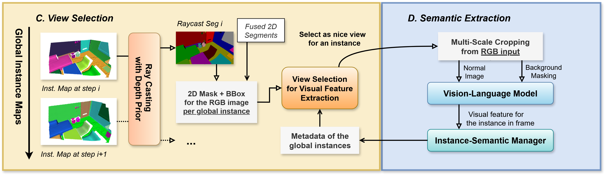
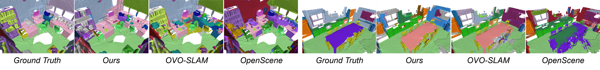

Instance Map
Interative visualization of the reconstructed instance map. Each instance is assigned a unique color, and the same instance maintains consistent coloring across frames.
Incremental open-vocabulary 3D instance-semantic mapping is essential for autonomous agents operating in complex everyday environments. However, it remains challenging due to the need for robust instance segmentation, real-time processing, and flexible open-set reasoning. Existing methods often rely on the closed-set assumption or dense per-pixel language fusion, which limits scalability and temporal consistency. We introduce OVI-MAP that decouples instance reconstruction from semantic inference. We propose to build a class-agnostic 3D instance map that is incrementally constructed from RGB-D input, while semantic features are extracted only from a small set of automatically selected views using vision-language models. This design enables stable instance tracking and zero-shot semantic labeling throughout online exploration. Our system operates in real time and outperforms state-of-the-art open-vocabulary mapping baselines on standard benchmarks.
Interative visualization of the reconstructed instance map. Each instance is assigned a unique color, and the same instance maintains consistent coloring across frames.
Interactive visualization of the incrementally aggregated semantic map. Each instance is colored according to its evaluated semantic category.

Part A & B: Class-Agnostic Instance Map Reconstruction
Part C & D: Incremental Semantic Features Aggregation.

Top Figure:
The left side shows the pixel-counting strategy that prioritizes frames with larger object masking area, often leading to redundant front-facing views.
The right side depicts our proposed object-centric view coverage method, which maintains a spherical map of explored viewing directions and selects frames that provide novel perspectives of the object.

Qualitative comparison of instance maps on the Replica dataset.

Qualitative comparison of instance maps on the ScanNet dataset.

Qualitative comparison of semantic maps on the Replica dataset.
Qualitative comparison of semantic maps on the ScanNet dataset.

Heat maps for semantic querying to the scenes from the Replica dataset.

Heat maps for semantic querying to the scenes from the ScanNet dataset.
Instance highlighting from arbitrary text queries.
TBD